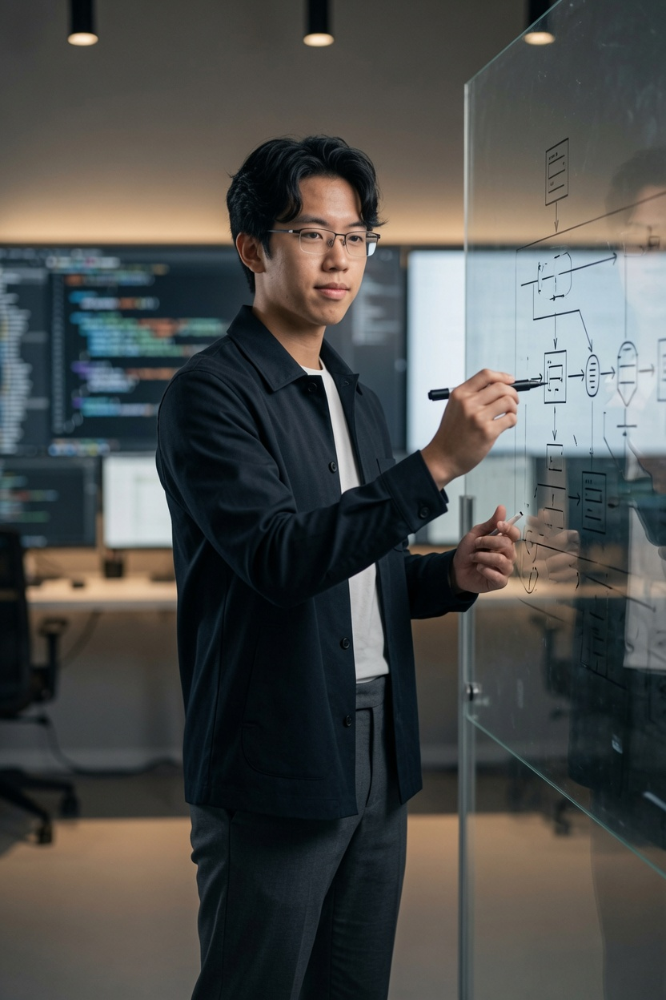

01 // ORIGIN · EARTH
MEGA IS A DIRECTION.
Begin with real problems on Earth, then engineer systems whose reach extends beyond one team, one workflow, or one moment in time.
NO MEGA PROJECT ASSIGNED — VISION ACTIVETechnical operations and emerging tech — real tools for real ops.
Projects are ranked by operational scale. Mega leads the vision; Advanced holds complex systems; Mini is a searchable catalog built to scale beyond one hundred entries.
Begin with real problems on Earth, then engineer systems whose reach extends beyond one team, one workflow, or one moment in time.
NO MEGA PROJECT ASSIGNED — VISION ACTIVEA Mega Project must combine serious architecture, infrastructure, automation, resilience, and a long development horizon—not simply a larger interface.
NO MEGA PROJECT ASSIGNED — VISION ACTIVEThis space stays intentionally empty until a system demonstrates exceptional depth, real-world consequence, and the capacity to evolve for years.
NO MEGA PROJECT ASSIGNED — VISION ACTIVE
A reserved direction for a multi-role operations system that connects intake, approvals, execution, evidence, and audit history without fragmenting the workflow.
NO PROJECTS MATCH THESE FILTERS
Self-taught. Ships tools with AI-assisted workflow.
Day job: investigation communications. Independently built the office’s official-letter parking request and allocation system.
3 months in government comms. Design met real process.
4 years client work. Design eye behind the code.
Held for AI systems, agents, and models under BlueWhaleX. Not online yet — first deployment pending.